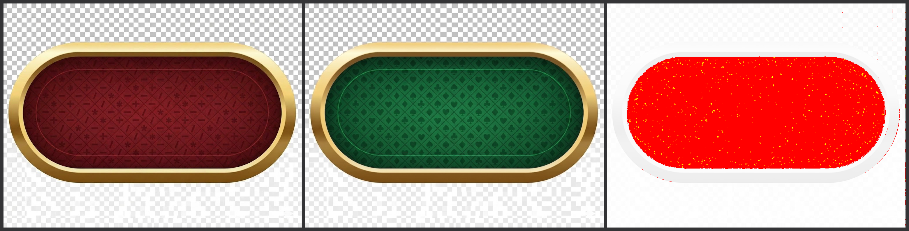
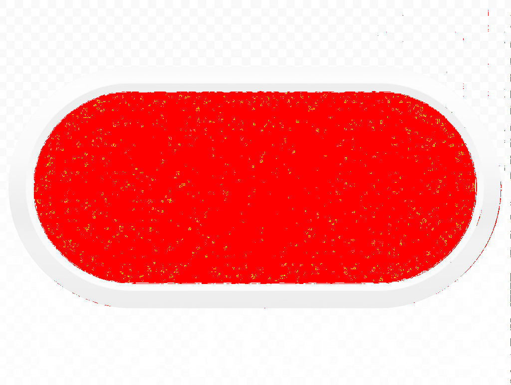

משמאל: קפסולה אדומה (מתמטיקה). באמצע: קפסולה ירוקה (פוקר). מימין: התמונה שמוציאה הפונקציה diff של Jimp על שתי משטחיות לבנות —
מה שמודגש שם הוא אזורים שונה מעל סף ההשוואה.


מימדי קנבס: 1024×774 בשני הקבצים. אחרי הבהרה על רקע לבן, כ־38.4% מהפיקסלים השונים מעבר לסף (ברירת מחדל 0.1).
הנתון המלא נמצא ב־capsule-diff-summary.json.